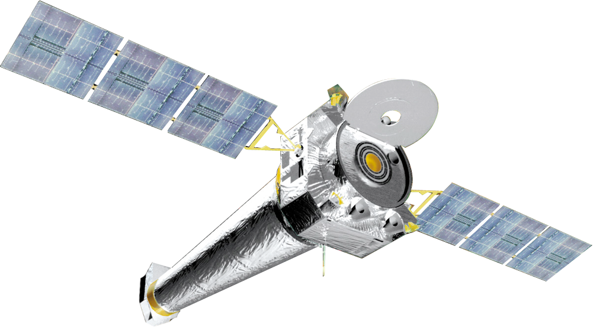
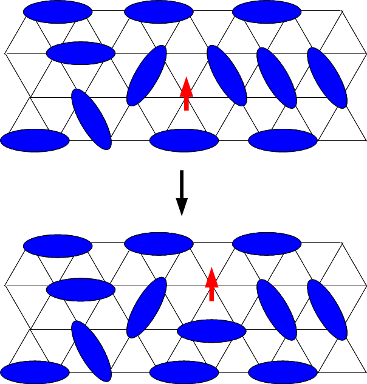
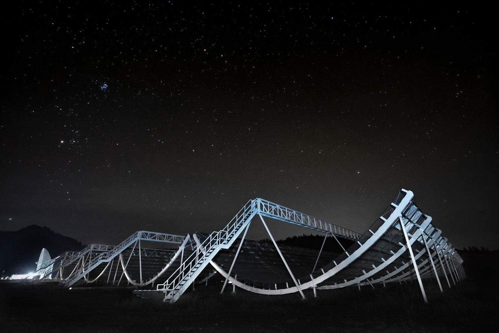
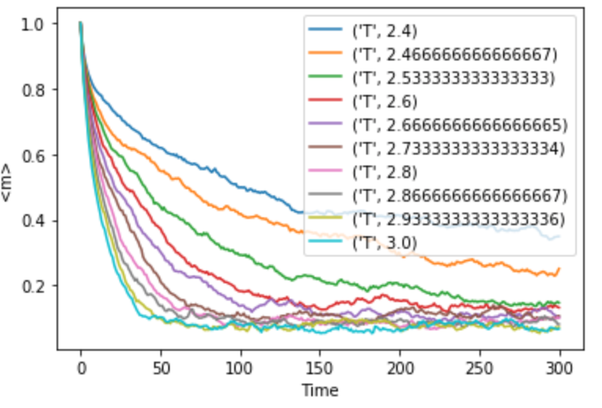

Research Projects
Ultra-luminous X-ray Sources in Globular Clusters:
Under the supervision of Professor Daryl Haggard and Dr.Kristen Dage, I have spent two years researching Ultra-luminous X-ray sources (ULXs) in Globular Clusters. ULXs are class of X-ray binaries, composed of a donor and accreting object. The luminosities of these objects far exceed the Eddington limit of the acrreting counterpart such that they have large magnitudes on the order of \(10^{39}\) erg per sec. In this regime, some strange physics is taking place. Tradtionally ULXs have been associated with young star formin regions within galaxies i.e the tidal arm of spiral galaxies. However, there is growing evidence to suggest that these ULXs can be found in older denser stellar populations, globular clusters (GCs). There exist two main theories: these GC ULX sources could be intermediate mass black holes accreting at sub-Eddington rates or they could be stellar mass black holes accreting at super-Eddington rates. Either way the data points to black hole candidates. Seeing as though it is quite rare to come upon black hole candidates in general, we are provided with the special opportunity to study the environments in which Intermediate mass black holes or strange stellar mass balck holes might form. This helps develop a timeline of how IMBHs evolve into these large super masive black holes, our favorite gravitational wave protigenitors.
NGC 4261:
My work focuses on finding GC ULXs in elliptical galaxy NGC 4261, which is 32 Mpc away. As a quick reference, the moon is ~ 1e-14 parsec away and the closest galaxy, Andromeda is 0.7 Mpc away. Safe to say its quite far. Observing a galaxy that far away comes with its own challenges. However the superior point source detection of Chandra X-ray Observatory proves to be superbly helpful. Previously, two gc ulx sources have been found in NGC 4261 which we have confirmed. However, previous studies lack a time domain study of the 18 LMXBs near the AGN which are highly varied and show exceptional promise for BH candidacy. Currently working on publishing my findings in the astrophysical journal. Link will be uploaded here when approved for submission!
NGC 1316:
Under the guidance of my postdoctoral supervisor, we searched for GC ULXs in lenticular galaxy, NGC 1316. It is 16.0 Mpc away from Earth. Interestingly this is the fourth brightest radio source in the sky. We discovered three new gc ulxs, bringing the total to 20 GC ULXs. The findings are published here!

Condensed Matter Theory:
During the summer of 2021, thanks the gracious grant from NSERC, I pursued a research project dealing with Quantum Spin Liquids under the guidance of Professor Andrea Bianchi.
Quantum Spin Liquids are a strange phase of matter that occurs due to the interaction of spins in specific materials. These liquids are most well known for their long range quantum entanglement. Several models exist which posses disorder ground states that can be described as a QSL. One theory states that localized spins are frsutrated if all of exchange interactions can not be satisfied at the same time which leads to a ground state degeneracy. A triangle of Ising spins interacting antiferromagnetically is an example Professor Bianchi discussed frequently. The other main theory has to do with Resonanting Valence Bonds. More information about these theories can be found on the Quantum Spin Liquid wikipedia page! There is no well define feature that identifies QSL behavior. Although there do exist several expiremental tests that we can use to paint a better picture of their properties. One of which is through specific heat measurements.My goal during the summer was to study the behavior of QSl and their specific heat phase transitions so that I could use CAD software such as Unity and SketchUp to design a heat enclosure for the materials to be tested in an expensive Oxford Instrument Heat Sink.
CHIME:
Working with Professor Matt Dobbs as a lab assistant while gaining crucial radio astronomy knowledge. Writing a paper about the possibility of SETI type signals being detected with CHIME using ARECIBO as a comparison. Paper can be found here!
Programming Projects

Smoke Ring Vortex:
During my senior year of my undergraduate, I enrolled in a fluid dynamics course which was super awesome because it allowed me to explore some reeally awesome physics coding problems. Above, is my resulting gif that simulates streamlines as two smoke rings leapfrog each other (a well known effect that occurs due to vortex behavior). Here the problem was solved numerically. For more details regarding the code and the theory of the problem, click to see my github repo!

Statistical Mechanics:
Lots of code to play around with various statisitcal mechanics concepts such as Brownian Motion, Glauber Methods and 2D Ising Models.For more details regarding the code and the theory of the problem, click to see my github repo!